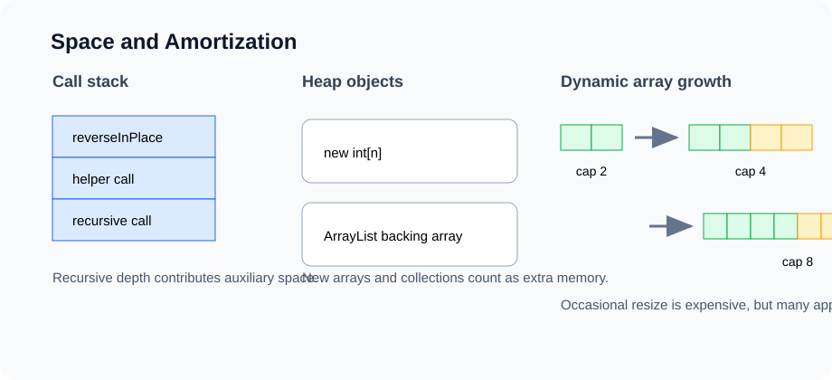

Lesson 3
Space Complexity and Amortized Analysis
Fast code can still fail if it uses too much memory. This lesson teaches how to count memory carefully and how to reason about operations that are occasionally expensive but cheap on average.

Example first: two ways to reverse data
Suppose we have an array and want the elements in reverse order. The first solution creates a new array.
static int[] reversedCopy(int[] a) {
int[] out = new int[a.length];
for (int i = 0; i < a.length; i++) {
out[i] = a[a.length - 1 - i];
}
return out;
}
This method uses O(n) extra space because it allocates a new array of length n. The second version
reverses the input array in place.
static void reverseInPlace(int[] a) {
int left = 0;
int right = a.length - 1;
while (left < right) {
int tmp = a[left];
a[left] = a[right];
a[right] = tmp;
left++;
right--;
}
}
This method uses O(1) auxiliary space because the number of extra variables does not grow with n.
It modifies the input, which may or may not be allowed by the problem.
Principle: input space vs auxiliary space
When analyzing space complexity, be clear about what you are counting. Two common conventions appear in algorithm classes:
| Term | Meaning | Example |
|---|---|---|
| Input space | Memory required to store the input itself | The given array of n integers |
| Auxiliary space | Extra memory allocated by the algorithm | A new array, HashMap, queue, recursion stack |
In most DSA homework, "space complexity" means auxiliary space unless the problem says otherwise. If a method receives an array, we usually do not count the input array. If the method creates another array of the same size, we do count that.
Java memory model: stack and heap
A simplified Java memory model is enough for DSA:
Stores active method calls and local variables. Recursive calls create more stack frames.
Stores objects and arrays created with new. References point to objects on the heap.
static void example() {
int x = 7; // local primitive value
int[] a = new int[3]; // reference is local; array object is on heap
a[0] = x;
}This distinction matters because many data structures are object graphs on the heap: linked list nodes, tree nodes, graph adjacency lists, hash table buckets, and trie nodes.
Counting common memory patterns
| Pattern | Auxiliary space | Reason |
|---|---|---|
| A few local variables | O(1) | Constant number of variables |
| New array of length n | O(n) | One slot per input element |
| HashSet containing up to n values | O(n) | Stores up to n keys |
| Queue for BFS over n nodes | O(n) | Frontier can hold many nodes |
| Recursive depth h | O(h) | One stack frame per active call |
| 2D DP table n by m | O(nm) | One cell per state |
Example: recursion stack space
Recursive methods use memory even when they do not allocate arrays or maps. Each unfinished method call stays on the call stack.
static int factorial(int n) {
if (n == 0) return 1;
return n * factorial(n - 1);
}
The time is O(n). The auxiliary space is also O(n) because the recursion depth is n.
factorial(4)
waits for factorial(3)
waits for factorial(2)
waits for factorial(1)
waits for factorial(0)Compare that with an iterative version:
static int factorialIterative(int n) {
int ans = 1;
for (int i = 2; i <= n; i++) {
ans *= i;
}
return ans;
}
The iterative version still takes O(n) time, but uses O(1) auxiliary space.
Example: copying vs aliasing
In Java, assigning one array variable to another does not copy the array. It copies the reference.
int[] a = {1, 2, 3};
int[] b = a;
b[0] = 99;
System.out.println(a[0]); // 99If you need an actual copy, allocate new memory:
int[] copy = Arrays.copyOf(a, a.length);
This takes O(n) time and O(n) auxiliary space. The ability to distinguish aliasing
from copying prevents many bugs in arrays, lists, and object-based structures.
Dynamic arrays: why ArrayList exists
A normal Java array has fixed length. But many programs need a list that can grow. The usual solution is a dynamic array: keep an internal array, track the logical size, and resize when the array becomes full.
interface SimpleList<E> {
int size();
boolean isEmpty();
E get(int index);
void addLast(E value);
E removeLast();
}The key invariant is:
0 <= size <= data.length
Only data[0], data[1], ..., data[size - 1] are real elements.
data.length is capacity, not logical size.Java implementation: generic dynamic array
Java does not allow direct creation of generic arrays in the cleanest way, so this educational version stores
an Object[] internally and casts when returning values.
class SimpleArrayList<E> implements SimpleList<E> {
private Object[] data = new Object[4];
private int size = 0;
public int size() {
return size;
}
public boolean isEmpty() {
return size == 0;
}
@SuppressWarnings("unchecked")
public E get(int index) {
checkIndex(index);
return (E) data[index];
}
public void addLast(E value) {
if (size == data.length) {
resize(data.length * 2);
}
data[size] = value;
size++;
}
@SuppressWarnings("unchecked")
public E removeLast() {
if (size == 0) throw new NoSuchElementException();
E value = (E) data[size - 1];
data[size - 1] = null; // avoid keeping an unnecessary reference
size--;
return value;
}
private void resize(int capacity) {
Object[] next = new Object[capacity];
for (int i = 0; i < size; i++) {
next[i] = data[i];
}
data = next;
}
private void checkIndex(int index) {
if (index < 0 || index >= size) {
throw new IndexOutOfBoundsException(index);
}
}
}
The line data[size - 1] = null matters. If the removed element is an object, keeping the reference
would prevent garbage collection from reclaiming it.
Pseudo code: append to a dynamic array
ADD-LAST(x):
if size == capacity:
create new array with capacity * 2
copy old elements into new array
data = new array
data[size] = x
size = size + 1
A single append can cost O(n) if it triggers resize. But most appends do not trigger resize.
Amortized analysis explains why a sequence of many appends is still efficient.
Amortized analysis: the main idea
Amortized analysis studies the average cost per operation over a worst-case sequence of operations. It is not the same as average-case analysis. There is no probability assumption. We are not saying "usually fast" based on random inputs. We are saying that across any long sequence, expensive operations are rare enough that the average cost is small.
| Analysis type | Question | Example |
|---|---|---|
| Worst-case per operation | How bad can one operation be? | One resize append costs O(n) |
| Average-case | Expected over random inputs or choices? | Randomized quicksort |
| Amortized | Average over a sequence, without probability? | ArrayList append is amortized O(1) |
Aggregate method: total cost over many appends
Suppose the dynamic array starts with capacity 1 and doubles whenever full. Consider n calls to
addLast.
Normal write cost: n
Resize copy costs: 1 + 2 + 4 + 8 + ... + largest power of 2 below n
Total resize copy cost < 2n
Total cost < 3n
Amortized cost per addLast < 3n / n = O(1)The geometric series is the key. Even though some individual operations are expensive, the total cost of all resizing copies is linear over n insertions.
Accounting method: each cheap operation pays a tax
Another way to explain amortization is to charge each append a little more than it actually costs. The extra charge is saved as credit to pay for future resizing.
Charge each addLast 3 credits:
1 credit pays for writing the new item now.
2 credits are saved to help pay for future copying during resize.When the array doubles, the saved credits from previous insertions can pay for copying old elements. This is less formal than the potential method, but it is intuitive and useful.
Potential method: stored energy
The potential method defines a function that measures stored "energy" in the data structure. For a dynamic array, a common intuition is that a half-empty region gives us room for future cheap appends.
We will not use heavy formalism in this course, but the idea is important:
amortized cost = actual cost + change in potentialCheap operations can increase potential. Expensive resize operations spend potential. Over a long sequence, potential keeps the total under control.
What if we grow by +1 instead of doubling?
Suppose the array increases capacity by only one slot whenever full. Then every append after the first few operations copies almost the entire array.
Copy costs:
1 + 2 + 3 + ... + (n - 1)
= n(n - 1) / 2
= Θ(n^2)
Across n appends, total cost is Θ(n^2), so amortized cost per append is Θ(n). This
is why real dynamic arrays grow geometrically, not by one slot at a time.
Shrinking arrays
If we remove many elements, should the dynamic array shrink? Yes, but not too aggressively. If we shrink as
soon as size == capacity / 2, repeated add/remove operations near the boundary may resize over and
over.
A common strategy is:
Grow when size == capacity.
Shrink when size <= capacity / 4.
When shrinking, resize to capacity / 2.This gap between grow and shrink thresholds is called hysteresis. It prevents resize thrashing.
Space-time tradeoffs
Many algorithmic choices intentionally spend memory to save time.
| Technique | Extra space | Time benefit |
|---|---|---|
| HashSet for membership | O(n) | Expected O(1) lookup instead of O(n) scan |
| Prefix sum array | O(n) | O(1) range sum after preprocessing |
| Memoization | Number of states | Avoids recomputing subproblems |
| BFS visited set | O(V) | Prevents infinite loops and repeated work |
| Merge sort auxiliary array | O(n) | Stable O(n log n) sorting |
A strong answer does not simply say "this uses more memory." It explains what operation becomes faster because of that memory.
Example: prefix sums as a space-time tradeoff
Suppose we need to answer many range-sum queries over the same array.
static int[] buildPrefix(int[] a) {
int[] prefix = new int[a.length + 1];
for (int i = 0; i < a.length; i++) {
prefix[i + 1] = prefix[i] + a[i];
}
return prefix;
}
static int rangeSum(int[] prefix, int left, int rightExclusive) {
return prefix[rightExclusive] - prefix[left];
}
Building the prefix array costs O(n) time and O(n) space. Each query then costs
O(1). This is a classic computing pattern: preprocess once, answer many queries quickly.
Common mistakes in space analysis
- Forgetting recursion stack space.
- Counting input space when the question asks for auxiliary space.
- Assuming
ArrayListsize and capacity are the same. - Forgetting that a
HashMapstores keys, values, buckets, and entries. - Calling an algorithm O(1) space when it creates a result array of length n.
- Ignoring whether the solution is allowed to modify the input.
Analysis routine
ANALYZE-SPACE(solution):
1. Define input size variables, such as n, m, V, and E.
2. Identify whether the problem asks for total space or auxiliary space.
3. List every created data structure.
4. Count the maximum size of each structure.
5. Include recursion depth as stack space.
6. Keep the dominant term.
7. State whether the input is modified.
8. For dynamic structures, mention amortized behavior if relevant.In-class exercises
- Analyze time and space for
reversedCopyandreverseInPlace. - Trace the call stack for
factorial(5). - Implement
SimpleArrayList.addFirst. What is its time complexity? - Explain why doubling capacity gives amortized O(1) append.
- Explain why increasing capacity by 1 gives amortized O(n) append.
- Design a method that uses O(n) extra space to make many queries faster.
Homework: GitHub submission
Create or update a GitHub repository for this course. Add a folder named lesson-03-space.
lesson-03-space/
README.md
src/
SimpleList.java
SimpleArrayList.java
Main.java
analysis/
space-analysis.mdRequired tasks
- Implement
SimpleList<E>andSimpleArrayList<E>. - Add
addLast,removeLast,get,size, andisEmpty. - Write a small
Mainprogram that demonstrates resizing. - In
space-analysis.md, explain time and space for every public method. - Explain why
addLastis worst-case O(n) but amortized O(1). - Include at least five tests or test cases in the README.
Optional challenge
Add shrinking when the array is at most one-quarter full. Explain why shrinking at one-half full can cause resize thrashing.